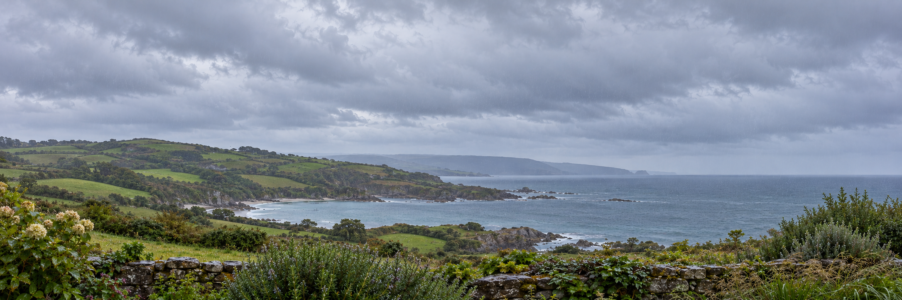
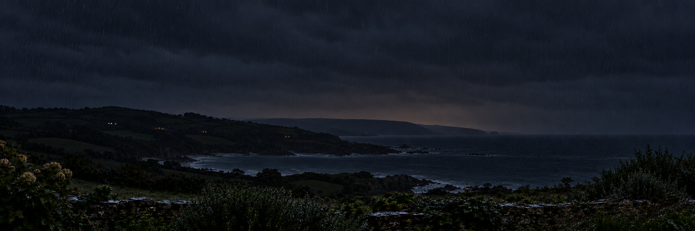

WhiskedAway · Cuddlecore window · Brief #3
Eleven at the inn.
Five dark night backdrops of the same garden, bay and headlands. All images are aligned on a 2172 × 724 canvas for the kitchen clock and barometer.


Rain · 11pmSave selected night PNG